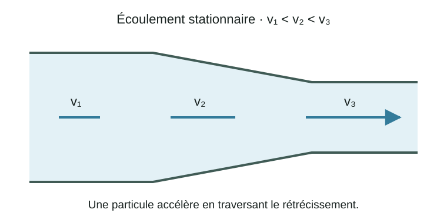
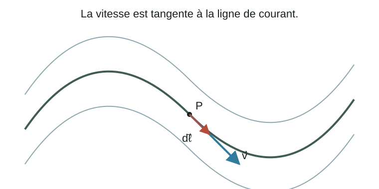
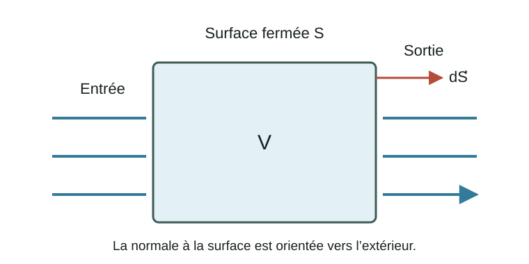
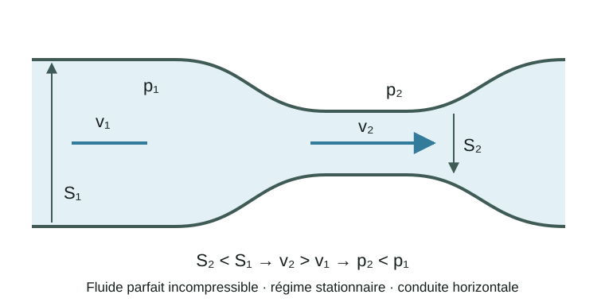

Les fluides parfaits
Dans le chapitre précédent, nous avons étudié des fluides au repos. La vitesse était donc nulle,
et l'équilibre mécanique conduisait à l'équation fondamentale de l'hydrostatique
Nous allons maintenant considérer des fluides en mouvement. Le champ de vitesse devient alors une fonction de la position et du temps,
La description du mouvement d'un fluide nécessite donc de comprendre comment les grandeurs physiques telles que la vitesse, la pression ou la masse volumique évoluent dans l'espace et dans le temps.
Description eulérienne du mouvement
Pour décrire le mouvement d'une particule solide, on suit généralement sa position
Pour un fluide, constitué d'un très grand nombre de particules, cette approche serait peu pratique.
On préfère généralement adopter une description eulérienne : on observe les grandeurs physiques en chaque point de l'espace.
On définit ainsi des champs :
et
Une particule de fluide se déplace à travers ces champs. Elle peut donc observer une variation d'une grandeur physique même lorsque le champ est indépendant du temps.
La dérivée particulaire
Considérons une grandeur scalaire quelconque
Une particule de fluide suit une trajectoire
La variation de \(f\) ressentie par cette particule est obtenue à l'aide de la dérivée totale :
Or,
Par conséquent,
En utilisant l'opérateur d'advection,
on obtient
Cet opérateur est appelé dérivée particulaire, dérivée matérielle ou dérivée totale.
Il contient deux contributions :
Le premier terme décrit la variation temporelle observée en un point fixe de l'espace.
Le second terme décrit la variation ressentie par une particule parce qu'elle se déplace dans une région où le champ n'est pas uniforme.
Un exemple important
Considérons un écoulement stationnaire dans lequel
Cela ne signifie pas nécessairement que l'accélération d'une particule de fluide est nulle.
En effet,
Ainsi,
Un écoulement peut donc être stationnaire tout en présentant une accélération.
C'est par exemple le cas d'un fluide qui traverse une conduite dont la section diminue : le champ ne change pas avec le temps, mais les particules accélèrent lorsqu'elles pénètrent dans la partie plus étroite.

L'équation d'Euler
Nous pouvons maintenant appliquer la deuxième loi de Newton à un élément de fluide.
Pour une masse élémentaire \(dm\),
On considère ici un fluide parfait, c'est-à-dire un fluide dont les effets de viscosité sont négligés.
Les forces agissant sur l'élément de fluide sont alors principalement :
les forces de pression ;
les forces volumiques, notamment la pesanteur.
Pour un volume élémentaire \(dV\),
La résultante des forces de pression par unité de volume est
tandis que la force gravitationnelle par unité de volume est
La deuxième loi de Newton donne donc
En utilisant la dérivée particulaire,
Cette relation est appelée équation d'Euler.
Elle représente simplement la deuxième loi de Newton appliquée localement à un fluide parfait.
Interprétation de l'équation d'Euler
L'équation d'Euler
peut être interprétée terme par terme.
Le terme
représente la masse volumique multipliée par l'accélération locale du fluide.
Le terme
représente la masse volumique multipliée par l'accélération convective.
Le terme
représente la force de pression par unité de volume.
Finalement,
représente la force gravitationnelle par unité de volume.
On peut donc résumer l'équation d'Euler sous la forme
Accélération convective et rotation du fluide
Une identité importante du calcul vectoriel permet d'écrire
On définit la vorticité
La vorticité mesure la rotation locale du fluide.
L'identité précédente devient
Un écoulement est dit irrotationnel lorsque
Dans ce cas,
Lignes de courant
Une ligne de courant est une courbe qui est, en chaque point, tangente au vecteur vitesse \(\vec v\).
Si \(d\vec\ell\) représente un déplacement infinitésimal le long d'une ligne de courant, alors
En coordonnées cartésiennes,
Dans un écoulement stationnaire, les lignes de courant ne changent pas avec le temps.

Le théorème de Bernoulli
Le théorème de Bernoulli peut être obtenu directement à partir de l'équation d'Euler.
Considérons un écoulement :
stationnaire ;
d'un fluide parfait ;
incompressible ;
soumis à la pesanteur.
L'équation d'Euler devient
Considérons maintenant un déplacement infinitésimal \(d\vec\ell\) le long d'une ligne de courant.
On effectue le produit scalaire de l'équation d'Euler avec \(d\vec\ell\) :
Comme \(d\vec\ell\) est parallèle à \(\vec v\), le terme associé à la vorticité ne contribue pas :
On obtient donc
Avec
on trouve
Pour un fluide incompressible en régime stationnaire, \(\rho\) est constante le long d'une ligne de courant. L'intégration donne alors
C'est le théorème de Bernoulli.
Entre deux points \(1\) et \(2\) appartenant à une même ligne de courant,
Interprétation physique
Les trois termes de Bernoulli ont les dimensions d'une pression, ou de manière équivalente d'une énergie par unité de volume :
Bernoulli traduit donc une conservation de l'énergie mécanique du fluide parfait le long d'une ligne de courant.
Une distinction importante
Dans un écoulement rotationnel, la constante de Bernoulli peut être différente d'une ligne de courant à une autre.
Ainsi,
En revanche, si la masse volumique est uniforme dans le domaine et si l'écoulement est également irrotationnel,
alors l'équation d'Euler peut être écrite directement sous la forme
Dans ce cas,
dans tout le domaine fluide connecté.
Attention : l'irrotationnalité n'est donc pas nécessaire pour appliquer Bernoulli entre deux points d'une même ligne de courant. Elle permet d'utiliser la même constante de Bernoulli dans tout l'écoulement.
Le débit volumique
Considérons une surface \(\mathcal S\) traversée par un fluide.
Pendant un intervalle de temps \(dt\), le volume traversant un élément de surface \(dS\) est
Le débit volumique est défini par
Ainsi,
Son unité dans le système international est
Si la vitesse est uniforme et normale à une section de surface \(S\),
Le débit massique
Le débit massique représente la masse de fluide traversant une surface par unité de temps :
Il s'écrit
Son unité est
Pour un fluide incompressible de masse volumique uniforme,
Conservation de la masse
Considérons maintenant un volume de contrôle fixe \(\mathcal V\), limité par une surface fermée \(\mathcal S\).
La masse contenue dans ce volume est
Par convention, le vecteur surface \(d\vec S\) est orienté vers l'extérieur du volume.
Ainsi,
représente le débit massique net sortant du volume.
La conservation de la masse impose donc
Le signe négatif signifie simplement qu'un débit net sortant entraîne une diminution de la masse contenue dans le volume.
En utilisant le théorème de Green–Ostrogradski,
On obtient alors
Cette relation étant vraie pour tout volume de contrôle,
Cette relation est appelée équation de continuité. Elle exprime localement la conservation de la masse.

Continuité et dérivée particulaire
En utilisant l'identité
l'équation de continuité devient
Or,
Par conséquent,
Cette écriture donne une interprétation physique particulièrement intéressante de la divergence.
Si
un élément de fluide tend localement à se dilater.
Si
il tend localement à se comprimer.
Cas d'un fluide incompressible
Pour un fluide incompressible, la masse volumique d'une particule de fluide reste constante pendant son mouvement :
L'équation (69) donne alors
La divergence nulle du champ de vitesse est donc la condition locale d'incompressibilité.
Application : conduite de section variable
Considérons un écoulement stationnaire incompressible dans une conduite.
La conservation du débit volumique impose
Ainsi,
Si la section diminue,
alors
Le fluide accélère donc lorsqu'il traverse un rétrécissement.
Continuité et Bernoulli : effet Venturi
Considérons un écoulement stationnaire d’un fluide parfait incompressible dans une conduite horizontale dont la section diminue.
La continuité donne
Si
alors
Comme la conduite est horizontale,
L'équation de Bernoulli donne alors
Puisque \(v_2>v_1\), on obtient
Ainsi, dans un écoulement horizontal idéal, une augmentation de la vitesse s'accompagne d'une diminution de la pression statique.
Ce phénomène est appelé effet Venturi.

À retenir
La dérivée particulaire est
L'accélération d'une particule de fluide est
Pour un fluide parfait, l'équation d'Euler est
La conservation de la masse est donnée par
Pour un fluide incompressible,
Pour un écoulement stationnaire d'un fluide parfait incompressible, Bernoulli donne, le long d'une ligne de courant,
Enfin, dans une conduite sans fuite en régime incompressible, avec une vitesse uniforme et normale à chaque section (ou une vitesse moyenne de section),
Exercices
Exercice 1 — Accélération convective
On considère un écoulement stationnaire unidimensionnel dont le champ de vitesse est
où \(\alpha\) est une constante positive de dimension \(\mathrm{s^{-1}}\).
Calculer la dérivée locale
\[\frac{\partial\vec v}{\partial t}.\]Calculer l'accélération convective
\[(\vec v\cdot\vec\nabla)\vec v.\]En déduire l'accélération totale
\[\frac{D\vec v}{Dt}.\]L'écoulement est stationnaire. Une particule de fluide est-elle pour autant soumise à une accélération nulle ? Commenter.
Exercice 2 — Équation d'Euler
On considère un fluide parfait au repos dans le champ de pesanteur terrestre,
Partir de l'équation d'Euler
\[\rho\frac{D\vec v}{Dt} = -\vec\nabla p+\rho\vec g\]et montrer que
\[\vec\nabla p=\rho\vec g.\]Retrouver l'équation fondamentale de l'hydrostatique
\[\frac{\partial p}{\partial z}=-\rho g.\]Pour un liquide incompressible, retrouver la relation
\[p+\rho gz=\mathrm{cste}.\]
Cet exercice montre que l'hydrostatique est simplement un cas particulier de l'équation d'Euler.
Exercice 3 — Débit et continuité
De l'eau circule dans une conduite dont la section passe de
à
La vitesse dans la première section est
On considère l'eau comme incompressible.
Calculer le débit volumique \(Q_V\).
En utilisant la conservation du débit,
\[S_1v_1=S_2v_2,\]calculer la vitesse \(v_2\).
Calculer le débit massique en prenant
\[\rho=1000\,\mathrm{kg\,m^{-3}}.\]Expliquer physiquement pourquoi la vitesse augmente lorsque la section de la conduite diminue.
Exercice 4 — Théorème de Bernoulli
De l'eau s'écoule dans une conduite entre deux points \(A\) et \(B\).
On donne
et
On prendra
On suppose l'écoulement stationnaire et le fluide parfait et incompressible ; les points A et B appartiennent à une même ligne de courant.
Écrire l'équation de Bernoulli entre les points \(A\) et \(B\).
Calculer la pression \(p_B\).
Identifier séparément l'effet de l'augmentation de la vitesse et celui de l'augmentation de l'altitude sur la pression.
La pression en \(B\) doit-elle être supérieure ou inférieure à celle en \(A\) ? Vérifier la cohérence avec le résultat numérique.
Exercice 5 — Effet Venturi
Un tube de Venturi horizontal transporte de l'eau. Les sections aux points \(1\) et \(2\) sont
La vitesse dans la première section est
On prendra
À partir de l'équation de continuité, calculer \(v_2\).
Écrire l'équation de Bernoulli entre les deux sections.
Calculer la différence de pression
\[p_1-p_2.\]Dans quelle section la pression est-elle la plus faible ?
Expliquer avec vos propres mots pourquoi une diminution de la section conduit ici à une diminution de la pression.
Exercice 6 — Champ de vitesse, divergence et incompressibilité
On considère le champ de vitesse bidimensionnel
où \(\alpha\) est une constante.
Calculer
\[\vec\nabla\cdot\vec v.\]Cet écoulement peut-il représenter un fluide incompressible ?
Calculer la vorticité
\[\vec\omega=\vec\nabla\wedge\vec v.\]L'écoulement est-il rotationnel ou irrotationnel ?
Calculer l'accélération convective
\[(\vec v\cdot\vec\nabla)\vec v.\]